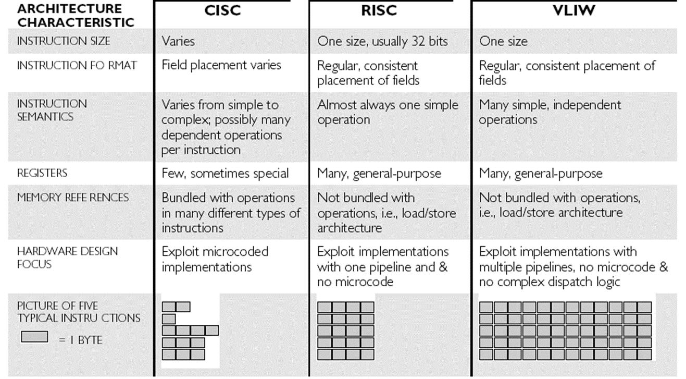
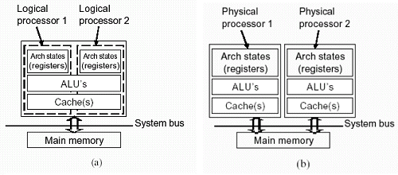

Современные микропроцессоры Эльбрус базируются на
архитектуре E2K, в основе которой лежит подход VLIW

CISC (x86) архитектура от RISC (ARM) отличается шириной командного слова:
в RISC (ARM) команды короткие и имеют фикс. размер, а в CISC (x86) ширина команды уже не фиксирована, но может быть длиннее.
VLIW больше похоже на RISC, нежели на CISC, т.к., хоть команды и шире намного, чем даже в CISC, но у VLIW ширина команд фиксирована.
С 1995 года x86 программы подают процессору x86 команды, но затем процессоры разбивают эти команды на RISC-подобные микрооперации.
Снаружи у Intel и AMD – CISC, а внутри – RISC.
Но зачем было так делать в 95-м?
Причина в том, что с годами количество транзисторов и вычислительных блоков росло, но было неясно, а как их задействовать то.
Intel и AMD нужно было как-то распараллелить операции для того, чтобы вычисления задействовали больше вычислительных устройств.
Вот и стали одну x86 (CISC) команду делить на (максимум) 4 RISC-подобные микрооперации.
Одна команда теперь стала грузить не один большой вычислительный блок, а вплоть до 4 мелких.
Но почему Эльбрус тогда использует VLIW?
Ведь Intel и AMD оказалось проще засунуть RISC блоки внутрь своих x86 процессоров, и заставить CISC команды разбиваться на RISC команды, чтобы добиться повышения производительности.
Разве это не значит, что если уж CISC не подошёл, то и с VLIW будет то же самое?
Разве он сможет в параллелизм?
Тут, как выяснилось, дело не в том, что широкое (CISC) и очень широкое (VLIW) команды не эффективны, а в том, что оптимизировать код для задействования всех возможностей процессора крайне сложно.
Если у вас одна команда дробится, условно, на 4 микрооперации, вы уже можете занять до 4 раз больше ресурсов для выполнения этой одной команды, если правильно свой код организуете.
Задача по оптимизации кода у x86 процессора лежит на самом
процессоре:
насколько эффективно процессор декодирует эти инструкции, и
насколько эффективно он распределит задачу по ядрам – большой вопрос.
x86 (CISC) процессоры Intel и AMD разбивают относительно
небольшое количество CISC команд на огромное количество RISC команд,
которые могут исполняться параллельно.
Т.е. вместо того, чтобы по одному
последовательно выполнять большие входящие команды, процессоры Intel и
AMD разбивают эти команды на RISC-подобные микрооперации и
выполняют сразу несколько команд параллельно маленькими арифметико-
логическими устройствами (ALU).
То, что я сейчас описал, зовётся
superscalar (суперскалярным процессором).
И этот вид параллелизма зовётся
неявным параллелизмом.
Почему неявным?
Дело в том, что, вместо того, чтобы изначально давать процессору уже распараллеленный код, мы даём
ядрам процессора простые команды, а дальше они уже сам решает, сколько
своих ALU им задействовать (в рамках каждого из ядер).
Но даже с таким подходом наращивать производительность бесконечно
не выходит ни у Intel, ни у AMD.
Для начала, разбивать большие CISC (x86)
команды можно лишь не более чем на 4 маленькие RISC команды.
Почему
максимум 4?
Дело в том, что иначе
обратную совместимость с предыдущими процессорами x86 не обеспечить.
Да, с каждым годом всё больше и больше транзисторов задействуется в
процессорах Intel и AMD, но им постоянно приходится идти на ухищрения
для роста производительности, т.к.
больше параллелизма им со старым
подходом не выжать.
Поэтому в 2002-м году свет увидели процессоры Intel
Pentium 4, которые первыми на потребительском рынке получили поддержку
виртуальной многоядерности или многопоточности, которую назвали Intel
Hyper-Threading (ранее эта технология появилась в процессорах серии Intel
Xeon).
Суть этой технологии в том, что ядро физически у вас одно, но
система его видит как 2 разных ядра, и ваши программы работают с одним
ядром так, словно их 2.
И, если ранее программы не могли задействовать все
вычислительные возможности каждого из ядер процессора, то теперь они на
каждом ядре старались задействовать больше АЛУ (до 2 раз больше).
